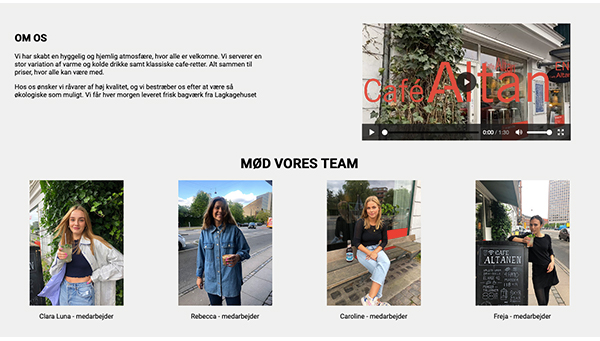
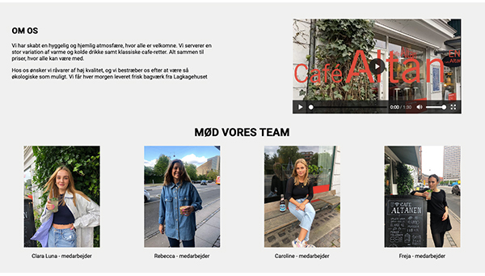
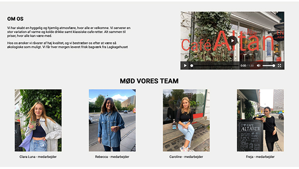

I grundlæggende indholdstemaet blev vi introduceret til videoproduktion. I denne proces arbejde vi med forarbejdet inden optagelse, selve optagelsen samt postproduktionen. Opgaven vi blev stillet var et pilotprojekt, som skulle filmes med vores smartphones af én eller flere interessante personer, som vi lavede i gruppearbejde, men en individuelt videoredegering i Premiere Pro efterfølgende.
Vores interviewpeperson var Nick Clemmesen. Hans familie bor på en kendt vej, hvor de op til juletid pynter rigtig meget op - så meget at det næsten er som et julemarked, hvor personer kommer og kigger på julepyntet. Dette er ikke kun Nick Clemmensens hus, men hele hans gade. Den færdige videoregering ses ovenfor.
En anden del af tema 5 var en proces i gruppearbejde, hvor vi skulle finde en virksomhed og lave indholdsproduktion og redesigne deres eksisterende hjemmeside. Vores gruppe kom i kontakt med Café Altanen som er en café tilhørende virksomheden altan.dk.
Vi havde dog vanskeligheder med indholdsproduktionen heri interviewet og videoproduktionen, da corona spillede en faktor for, hvem vi kunne interviewe og desværre måtte Café altanen lukke ned og heraf ingen video med kunder, som kunne have givet et mere dynamisk og levende budskab i videoindholdet. Til højre kan du/I se vores proces og dokumentationen heraf og i linket nedenfor, kan I se redesinget.
Link til Redesignet af Café Altanen
Endvidere er der et udsnit af redesignet i galleriet nederst på denne side.
